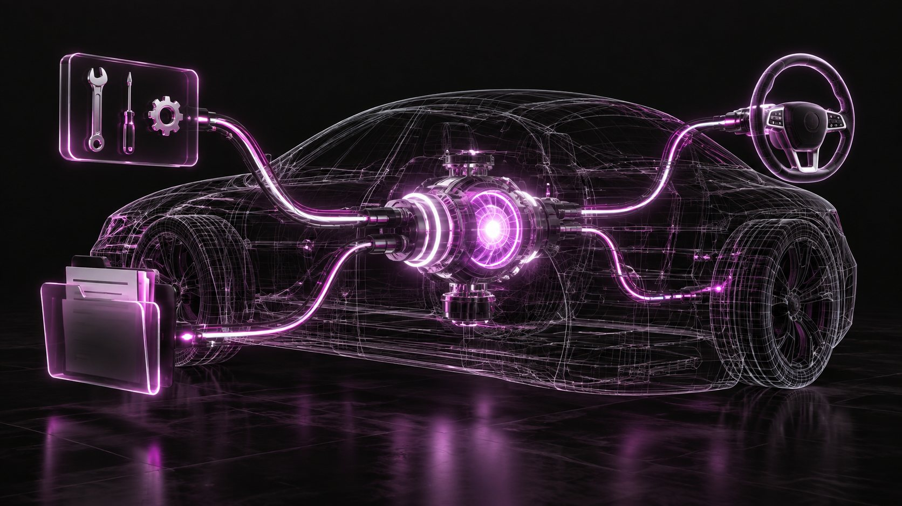

Des modèles frontière au tout local : ce que j'utilise, ce qui existe déjà pour nous, et ce qui tourne sur un ordinateur
Julien MORICE · service PracTice, IMT Business School avec Baptiste GAULTIER, IMT Atlantique
Jeudi 26 novembre 2026 · 14 h - 16 h · à distance

Séminaire apprenant de l'IMTTANGENTE
La carte de l'atelier
Pas une définition, des degrés
Plus on monte, plus le modèle se rapproche de vous. À chacun de situer ses usages et ses données sur l'échelle.
1
Modèles frontière
Claude, ChatGPT… puis le PIAG
Le modèle tourne chez un éditeur, souvent hors d'Europe.
JulienBaptiste
2
Outils souverains prêts à l'emploi
L'Assistant, Visio, Transcript, Grist
Chez l'État, rien à installer.
Baptiste
3
Logiciel chez moi, calcul à distance
Kiro, Open WebUI, RAGaRenn, OpenCode
Le modèle tourne chez ILaaS (enseignement supérieur) ou Albert (État).
JulienBaptiste
4
Tout local, tout souverain
LM Studio, agent vocal
Sur mon ordinateur : rien ne sort, même sans réseau.
JulienBaptiste
26 novembre 2026Tangente 2026 · IA souveraine et IA locale
Julien · 10 minutes
Niveau 1
Modèles frontière
Les plus puissants, les plus pratiques… et pas souverains. Je commence par ce que je fais vraiment, tous les jours.
1
2
3
4
26 novembre 2026Tangente 2026 · IA souveraine et IA locale
Niveau 1 · mes usages
Trois outils, chacun son rôle
💬
Claude
Converser, avec des projets
Écrire, reformuler, analyser un document. Un projet par sujet, avec ses consignes et ses fichiers.
🗂️
Claude Code
Un agent sur mes dossiers
Je lui ouvre un dossier : il lit, il écrit, il fabrique des documents, des sites, des applications.
🎨
ChatGPT
Les images
Visuels de présentation, illustrations. Le prompt est souvent préparé par Claude, qui connaît mon contexte.
Ce qui fait la différence n'est pas le prompt : c'est le contexte que je prépare. Dossiers, mémoire, savoir-faire.
26 novembre 2026Tangente 2026 · IA souveraine et IA locale
Niveau 1 · le harnais
Le modèle est le moteur, le harnais fait la voiture
Le moteur : le modèle (Claude, GPT, Mistral…)
Le dossier de travail : l'agent ne voit que ce que je lui confie
La mémoire : qui je suis, mes règles, mes conventions
Les savoir-faire : mes modèles de compte rendu, de courrier, de syllabus
Les connecteurs et les garde-fous : agenda, mail, et ce que l'agent a le droit de faire

Le même moteur, sans carrosserie ni volant, ne va nulle part.
26 novembre 2026Tangente 2026 · IA souveraine et IA locale
Niveau 1 · Claude Code, de bout en bout
Le contexte fait le travail
Vidéo muette ·
0:00
Le dossier de travailUn cas, trois rapports de recherche, le README du projet.
0:20
La mémoire et les savoir-faireCLAUDE.md (qui je suis, mes règles) et le dossier des compétences.
0:32
Ouvrir Claude Code sur le dossierL'agent ne voit que ce qu'on lui confie.
0:44
Une demande d'une phraseLe contexte déjà en place dit le reste.
0:56
Le plan, puis le travailIl lit les rapports et coche ses étapes.
1:08
Trois livrables, en Word et en PDFUne note de deux pages, un support, un tableau de bord.
2:08
Puis un site modifiableMême conversation, une demande de plus.
26 novembre 2026Tangente 2026 · IA souveraine et IA locale
Niveau 1 · en réserve
Le compte rendu en une phrase
Vidéo · à commenter
L'audio transcrit, déposé dans un dossier, puis une seule demande : « Fais-moi le compte rendu de la réunion. » Le Word arrive, au modèle de l'école.
Baptiste fera la même chose, en souverain, au niveau 2.
26 novembre 2026Tangente 2026 · IA souveraine et IA locale
Niveau 1 · la limite
Puissant, mais pas souverain
Où tourne le modèle
Sur les serveurs de l'éditeur, hors de notre main : hébergement, droit applicable, conditions d'utilisation.
Ce que j'y mets
Documents de travail, contenus publics ou anonymisés. Jamais de données d'étudiant·es, de santé ou de ressources humaines.
Ce que ça coûte
Un abonnement payant pour les fonctions avancées, à titre individuel ou par une offre d'équipe.
Ce qui peut changer sans nous
Les prix, les quotas, les modèles proposés, la disponibilité du service.
La bonne question n'est pas « quel est le meilleur modèle ? » mais « de quel modèle ai-je besoin pour cette tâche, avec ces données ? »
26 novembre 2026Tangente 2026 · IA souveraine et IA locale
Relais · 14 h 35
À toi, Baptiste
Niveau 1, suite : le PIAG, le portail de l'IA générative de l'État (5 min). Niveau 2 : La Suite numérique, L'Assistant, Visio et sa transcription, Transcript, Grist.
Partage d'écran à Baptiste
2
26 novembre 2026Tangente 2026 · IA souveraine et IA locale
Julien · 15 minutes
Niveau 3
Mon logiciel, le calcul à distance
Le logiciel est sur mon poste ou chez mon école. Le modèle tourne dans l'enseignement supérieur (ILaaS) ou chez l'État (Albert).
1
2
3
4
26 novembre 2026Tangente 2026 · IA souveraine et IA locale
Niveau 3 · le principe Démo en direct
Une clé d'API, et on choisit son logiciel
Sur mon poste ou à l'école
Mon logicielKiro, Open WebUI, AnythingLLM, OpenCode…
→
Ma carte d'accès
Une clé d'APIPersonnelle, à ne jamais partager ni afficher.
→
Enseignement supérieur
ILaaSMistral Small 4, Qwen 3.8, Gemma 4
État · DINUM
Albert APIConnexion ProConnect
Clé ILaaS individuelle
Pour toute personne de l'enseignement supérieur : on se connecte, on génère sa clé.
Kiro est un logiciel de Renaud Dékode (renaud-dekode.fr), adapté par PracTice pour ILaaS et Albert. Les modèles ILaaS et Albert passent par un relais : la clé individuelle d'ilaas.fr ne suffit pas.
26 novembre 2026Tangente 2026 · IA souveraine et IA locale
Niveau 3 · une instance d'école Démo en direct
Une interface d'école : chat.imt-bs.eu
Open WebUI, logiciel libre, pour IMT-BS et Télécom SudParis
Connexion par le compte de l'école : rien à installer, pas de clé à gérer
Modèles ILaaS et Albert, servis par le relais LiteLLM de PracTice
chat.imt-bs.eu : l'école installe, ses personnels se connectent.
RAGaRenn : pour essayer dès aujourd'hui, sans rien demander à personne.
26 novembre 2026Tangente 2026 · IA souveraine et IA locale
Niveau 3 · avant-goût du niveau 4
La transcription, sur mon Mac
Whisper, modèle ouvert de transcription, tourne sur l'ordinateur
Une réunion d'une heure transcrite en 5 minutes environ
Aucun fichier envoyé : texte et sous-titres restent sur le poste
Ici, même le calcul reste chez moi : c'est déjà le niveau 4.
26 novembre 2026Tangente 2026 · IA souveraine et IA locale
Niveau 3 · en résumé
Lequel, pour qui ?
Installation
Clé à gérer
Mes conversations
Pour qui
Kiro
Aucune : un dossier à ouvrir
Oui, via un relais
Dans mon navigateur
Postes sans droits d'administrateur
Open WebUI d'école
Aucune : une adresse
Non, l'école la tient
Sur le serveur de l'école
Tout le personnel d'une école équipée
RAGaRenn
Aucune : une adresse
Non
Sur le serveur de Rennes
Essayer sans attendre
AnythingLLM
Logiciel à installer
Oui
Sur mon disque
Usage quotidien avec des documents
26 novembre 2026Tangente 2026 · IA souveraine et IA locale
Relais · 15 h 15
À toi, Baptiste
Niveau 3, suite : OpenCode et Mistral Vibe branchés sur ILaaS, pour coder.
Partage d'écran à Baptiste
3
26 novembre 2026Tangente 2026 · IA souveraine et IA locale
Julien · 5 minutes
Niveau 4 · boss final
Tout local
Le modèle tourne sur mon ordinateur. Rien ne sort, même wifi coupé.
1
2
3
4
26 novembre 2026Tangente 2026 · IA souveraine et IA locale
Niveau 4 · LM Studio Démo en direct
Un modèle, sur mon Mac
1
Choisir un modèle ouvertDans le catalogue : Gemma, Qwen, Mistral…
2
Le télécharger une foisQuelques gigaoctets, comme une application.
3
Converser, wifi coupéLa preuve que rien ne sort.
Ordre de grandeur : plus le modèle est gros, plus il faut de mémoire. Un petit modèle tient sur un portable récent ; les plus gros demandent une machine dédiée.
26 novembre 2026Tangente 2026 · IA souveraine et IA locale
Niveau 4 · le même logiciel, un autre moteur Démo en direct
Le même Kiro, branché sur mon Mac
1
LM Studio : le serveur localOnglet Développeur, démarrer le serveur, cocher Enable CORS.
2
Kiro : l'adresse du serveurConfiguration › API et Modèles › LM Studio : http://localhost:1234, puis « Mettre à jour ».
3
Choisir le modèle localIl apparaît dans le sélecteur, à côté des modèles ILaaS.
Même logiciel qu'au niveau 3 : on ne change que l'endroit où tourne le modèle. Le harnais reste, le moteur change.
26 novembre 2026Tangente 2026 · IA souveraine et IA locale
Relais · 15 h 25
À toi, Baptiste
Niveau 4, suite : un agent vocal qui tourne en local, en français, qu'on peut interrompre à tout moment.
Partage d'écran à Baptiste
4
26 novembre 2026Tangente 2026 · IA souveraine et IA locale
Pratique guidée · 10 minutes
À vous : votre première clé
🔑
Clé ILaaS
Enseignement supérieur et recherche. Connexion, puis « générer ».